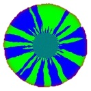
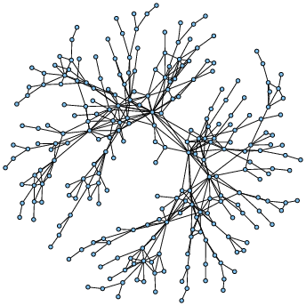
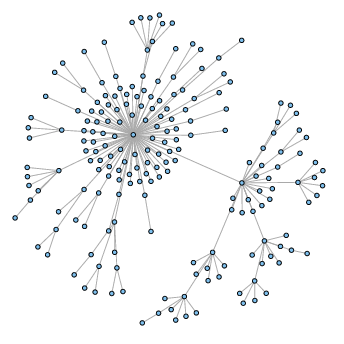
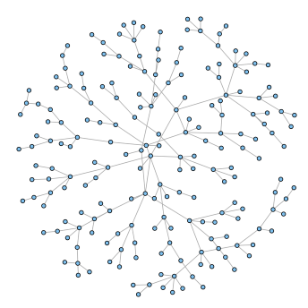
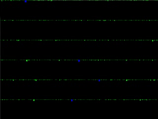
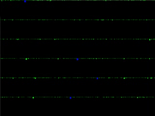
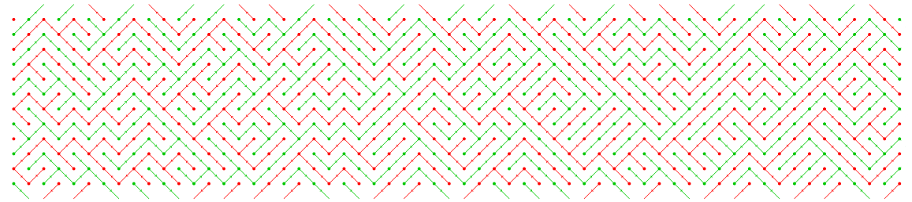
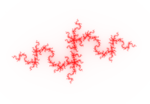
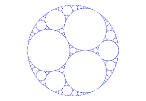
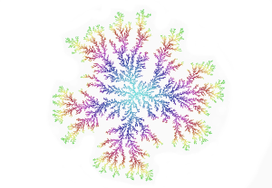

Nic Freeman's
University of Sheffield Webpage
My research interests are in stochastic processes and applied probability, often towards situations in which finding a reasonable model is a difficult mathematical problem.
A common theme throughout much of my work is genealogies. Genealogies record relationships, and transfers, of information across time and space - such as a family tree, or the spread of a news story. I have worked on several situations in which modeling, or analyzing, the large-scale structure of a genealogy is a key issue.
Population genetics
Population genetics studies the dynamics of evolution, over long time-scales and for large numbers of organisms.
My work in this area has focused on spatial effects related to natural selection, in particular on the relationship between spatial dimension and the rate at which natural selection progresses, and on the motion of a type of interface region (between distinct populations) known as a hybrid zone; in the context of the spatial Lambda-Fleming-Viot process.


Simulations of various SLFV processes: growth in sectors (left), and approximating mean curvature flow (right).
Perferential attachment & urn processes
Preferential attachment processes are randomly evolving graphs which seek to capture a 'rich get richer' mechanism.
For example, already popular holiday destinations tend to be viewed as (disproportionately) more attractive, and therefore attract more new visitors; new users joining a social network are more likely to become friends with existing users who already have many friends.
In this area, I am interested in the interaction between the underlying appeal and the random network effects that contribute towards information 'going viral'.



Sample graphs from various models of preferential attachment with fitness.
Forest fire processes
Forest fire processes (but not those which seek to model burning trees!) are interacting systems in which particles cluster together slowly and then suddenly break apart.
My work in this area investigates a forest fire process which exhibits a phenomenon known as self-organized criticality, meaning that it has a natural propensity to move towards states that exhibit its most intricate behavior.
 

A simulation of the Drossel-Schwabl model (left), and a mean field version of the same model (right).
Coalescents, webs and nets
Beginning with my D.Phil. thesis, my work on coalescent theory focused on extensions of the Lambda-coalescent to spatial settings. More recently, I have also worked on the Brownian web and the Brownian net.
There is significant overlap between coalescent processes and population genetics, which arises because examining a population model backwards in time typically results in connections to coalescent processes - in the same way that looking backwards through a family tree reveals children with common parents, grandparents, and so on.

A simulation of the (discrete) double Brownian web.
Fractals
My interest in fractals stems from my first research project, dating from when I was an undergraduate, into perturbations of iterated function systems.
I am not active in this area, but I have retained an interest in fractals, and particular in random fractals, ever since.



A Julia set (left), the Apollonian gasket (center) and a random fractal (diffusion limited aggregation, right).